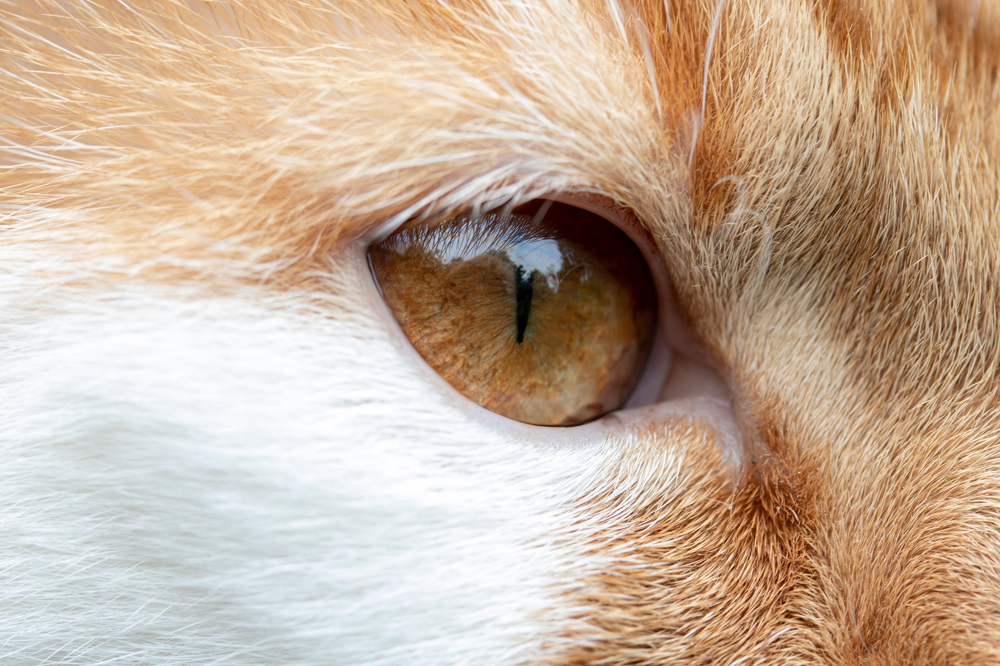

Rundum gut gepflegt
Mutter Natur hat die Katze mit einer sehr rauen Zunge ausgestattet, mit der sie einen großen Teil der Pflege selbst übernehmen kann. Die ausgiebige Körperpflege unserer Samtpfoten hat dabei schon beinah etwas Meditatives. Gewöhnen Sie Ihre Katze frühzeitig an ergänzende Pflegemaßnahmen und nutzen Sie diese vertrauten Momente der Gemeinsamkeit.
Fellpflege der Katze
Nicht umsonst wird das Fell einer Katze als Spiegel der Gesundheit und des Wohlbefindens betrachtet. Natürlich verfügt die Katze selbst über eine hervorragend zur Fellpflege geeigneten Zunge, jedoch gilt dabei zu bedenken, dass sie viele Haare verschluckt, wodurch sich Haarballen bilden können. Diese führen unter Umständen zu Verstopfung, Erbrechen und Durchfall. Regelmäßiges Bürsten ist daher unerlässlich und sollte als Wohlfühlprogramm von Anfang an durchgeführt werden. In Zeiten des Fellwechsels sollten Sie durch zusätzliche Kämmeinheiten den Fellwechsel unterstützen.
Krallenpflege
Das Krallenwetzen gehört zur Körperpflege einer Katze dazu. Freigänger wetzen ihre Krallen in der Regel auf natürliche Weise ab. Damit auch Hauskatzen diesem Ritual nachgehen können, ohne dabei die Wohnungseinrichtung zu zerstören, sollten Sie in jedem Fall einen Kratzbaum zur Verfügung stellen. An einem übersichtlichen Platz in der Wohnung angebracht wird er meist schnell akzeptiert. Sollten die Krallen dennoch einmal zu lang geworden sein, lassen Sie sie (je nach Temperatment der Katze) am Besten vom Tierarzt kürzen. Das Krallen Schneiden an sich tut der Katze zwar nicht weh, jedoch sollten Sie Ihren Stubentiger daran gewöhnen, dass man seine Pfötchen anfasst, damit er sich auch beim Tierarzt wohl fühlt.
Zahnpflege
Eigentlich lässt sich nicht erklären, warum viele Katzenhalter der Zahnpflege ihrer Katze so wenig Bedeutung beimessen. Vielleicht liegt es an der persönlichen Angst eines Menschen vor dem Zahnarzt. Dennoch ist die regelmäßige Zahnkontrolle wichtig, denn auch Katzen leiden häufig an Mundgeruch, Zahnfleischentzündungen und Zahnstein. Kontrollieren Sie die Zähne regelmäßig und wählen Sie ggf. ein Trockenfutter statt eines Nassfutters zur besseren Zahnreinigung aus. Ist der Zahnstein erst einmal entstanden, kann er nur noch vom Tierarzt mittels Ultraschallgerät entfernt werden.
Pflege der Augen, Ohren und Nase
Reinigung der Augen
In erster Linie gilt es, die Augen der Katzen vor Infektionen zu schützen. Bei manchen Rassen kann die Tränenflüssigkeit, die über den sogenannten Tränen-Nasengang abgeführt wird, nicht richtig abfließen, was zu Augenausfluss und resultierenden Infektionen einhergehen kann. Wischen Sie die Augen daher regelmäßig mit einem fusselfreien, weichen, feuchten Tuch aus. Sofern Sie gerötete Lider oder eitrigen Ausfluss feststellen, suchen Sie bitte den Tierarzt auf.
Reinigung der Ohren
Die Ohren der Katze sollten immer sauber sein, denn wer weiß, wie sehr Katzen unter Ohrenschmerzen leiden können, kann nachvollziehen, wie wichtig diese Pflege ist. Die Reinigung Ihrerseits sollte sich dabei nicht auf den Gehörgang ausdehnen. Verwenden Sie vorsichtig ein feuchtes Tuch zum Auswischen der Ohrmuschel und beraten Sie sich ggf. mit Ihrem Tierarzt über spezielle Reinigungspräparate.
Reinigung der Nase
Diese können Sie sanft mit einem feuchten Tuch von Unreinheiten befreien. Treten häufiger Ausfluss oder Verkrustungen auf, konsultieren Sie bitte Ihren Tierarzt.